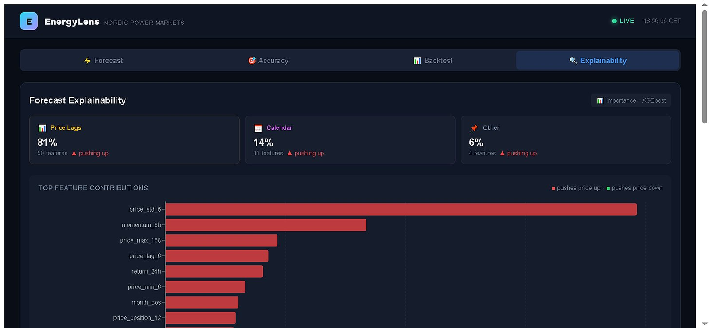
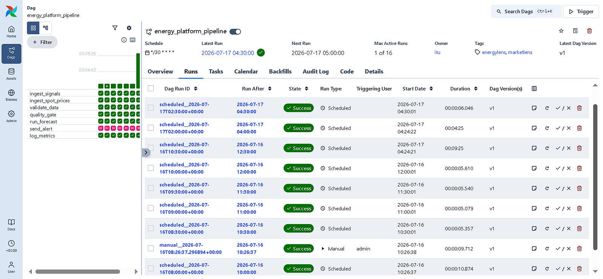
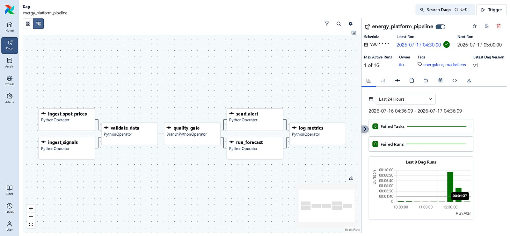
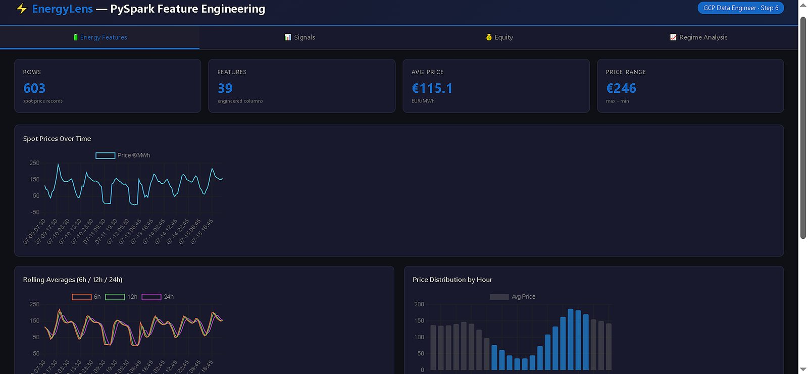
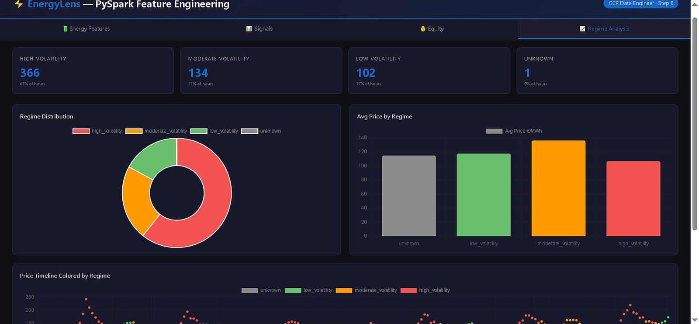
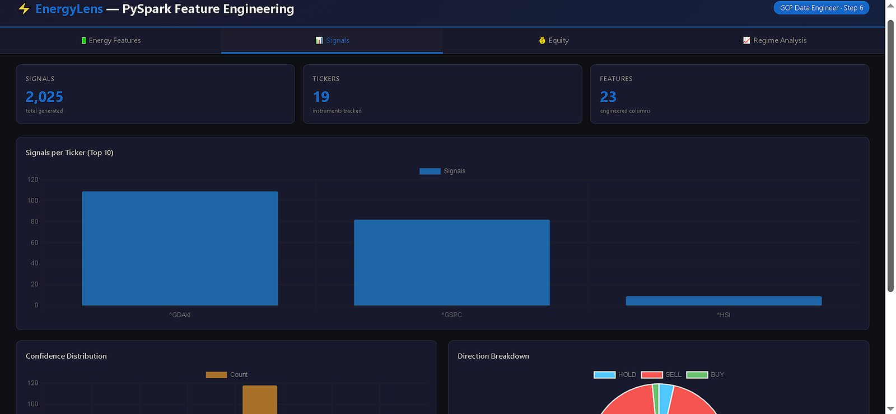
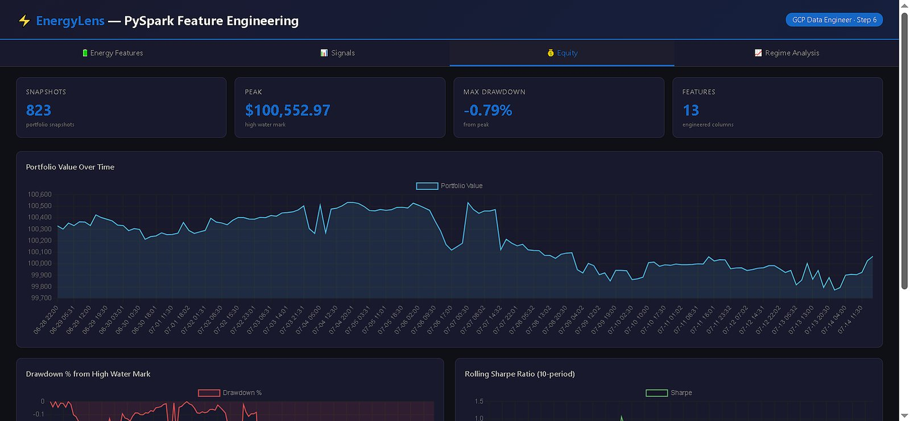

From neural architecture design to fully automated cloud pipelines. Two production platforms live on Google Cloud — designed, built, deployed and operated solo.
I'm an AI/ML & Data Engineer based in Copenhagen with 3+ years of hands-on experience building production-grade machine learning systems and data platforms. I don't just train models — I design, build, deploy, and monitor the entire infrastructure that keeps them running reliably in production.
My two flagship platforms — MarketLens (SaaS trading analytics) and EnergyLens (Nordic energy forecasting) — are both live in production on GCP Cloud Run, orchestrating neural ensembles across fully automated pipelines. I recently completed a six-stage GCP data engineering build covering BigQuery, PostgreSQL, Pub/Sub + Beam, Airflow, dbt, and PySpark — all on real production data.
Stanford-trained in ML, certified by AWS and Google, with domain expertise in financial data, energy markets, time series forecasting, and real-time systems. Fluent in Danish, English, and Urdu.
Every pipeline is designed to run without me. Zero manual steps from data to delivery.
I architect models, build infra, deploy to prod, and monitor in real time. End to end.
Docker on Cloud Run, CI/CD, drift detection, self-healing recovery. Not notebooks.
BigQuery, dbt, PySpark, Airflow, Beam, Pub/Sub — the full modern data stack.
Fully Automated AI Trading Intelligence
A production SaaS platform built solo on Google Cloud Run. It orchestrates an 8-model neural ensemble — Transformer, CNN-LSTM-Attention, TCN, N-BEATS, LSTM-GRU, XGBoost, Sklearn Ensemble, and Enhanced Informer — across a zero-touch automation pipeline. Real-time data ingestion feeds automated feature extraction of 50+ indicators, flows through ensemble inference and a 5-check quality gate, and delivers results via Telegram and API. Signals cover 19 asset classes across three timeframes with sub-second inference.
Drift detection triggers automated GPU retraining via Kaggle. GCS model versioning with webhook-driven hot-reload. Zero-downtime deployments.
Per-prediction feature importance analysis for model transparency and compliance. Every output is interpretable and auditable.
Institutional-grade risk management: VaR calculations, Kelly Criterion position sizing, max drawdown limits, and dynamic SL/TP per asset class.
Stripe integration with 3 subscription tiers, Firebase Auth, per-user Firestore data isolation. Event-driven, fully automated.
dbt Core transformation layer with 22 automated tests across 1,718 predictions, 461 execution records, 252 drift logs, 242 equity snapshots.
Gemini embeddings (768-dim), Firestore cosine KNN vector search, LLM generation over 29-document knowledge base for intelligent Q&A.
Nordic Energy Market AI Forecasting
A live forecasting platform for Nordic power markets (DK1/DK2). Built with bitemporal data pipelines for point-in-time replay, an 8-model neural ensemble for 24-hour-ahead price prediction, and a 5-gate signal quality framework with SHAP explainability and forecast accuracy tracking. Ingests Nord Pool spot prices, Open-Meteo weather data and ENTSO-E generation data on an automated six-hourly schedule, with 568,681 generation records backfilled across DK1 and DK2 to train on a full year of wind, solar and thermal output.

valid_time and knowledge_time columns enable point-in-time historical replay. Forward-fill non-price features, temporal advancement, absolute-mode clamping.
Grouped feature importance analysis (temporal, weather, price history) providing transparent, auditable rationale for each forecast cycle.
Automated engine comparing predictions against actuals with per-model MAE/RMSE breakdown, historical trends, and directional accuracy metrics.
568,681 ENTSO-E records across DK1/DK2 drive wind, solar and total-output features — lags, rolling means, volatility and price-per-MW ratios.
Cloud Scheduler triggers ingestion, feature build and forecast every six hours. Retrained models hot-reload from GCS without a redeploy.
Model outputs blended by inverse-MSE weighting derived from walk-forward cross-validation — no single point of model failure.
12,000+ forecasts logged and scored against actuals across 24/48/72h horizons. Systematic bias in the tracker is what triggers retraining.
React 18 + Vite dashboard on a FastAPI backend with 15+ REST endpoints, containerised on Cloud Run and running inside the GCP free tier.
Five gates — confidence band, model consensus, data freshness, forecast stability and volatility — block low-trust forecasts before publication.
Six-stage pipeline build on real production data from EnergyLens and MarketLens, executed end to end in GCP Cloud Shell.
13 analytical queries across 3,895 records — window functions, CTEs, partitioned tables, cross-dataset joins.
Docker-hosted with 8 tables, 3 schemas, triggers, views, and referential integrity on production data.
3-branch streaming pipeline with real-time anomaly detection, windowed aggregations, dead-letter queues.
7-task DAG, BranchPythonOperator quality gate, 30-min cron, 16 successful runs, 0 failures.
7 models (staging/intermediate/marts), 29/29 tests, SCD2 snapshot, source freshness monitoring.
75 engineered features across 4 datasets, UDF regime classification, window functions, Parquet outputs, interactive dashboard.






Every pipeline I build is designed to run without me. From data ingestion to model retraining to delivery, I eliminate manual steps systematically. If a human has to trigger it, it's not done.
I don't hand off. I architect the models, build the infrastructure, deploy to production, and monitor in real time. Two live platforms prove I can do it all solo, at production scale.
Jupyter notebooks are for exploration. I ship Docker containers on Cloud Run with CI/CD, drift detection, and self-healing recovery. If it can't survive a weekend without me, it's not production.
Copenhagen-based • Open to remote & relocation • Danish, English, Urdu